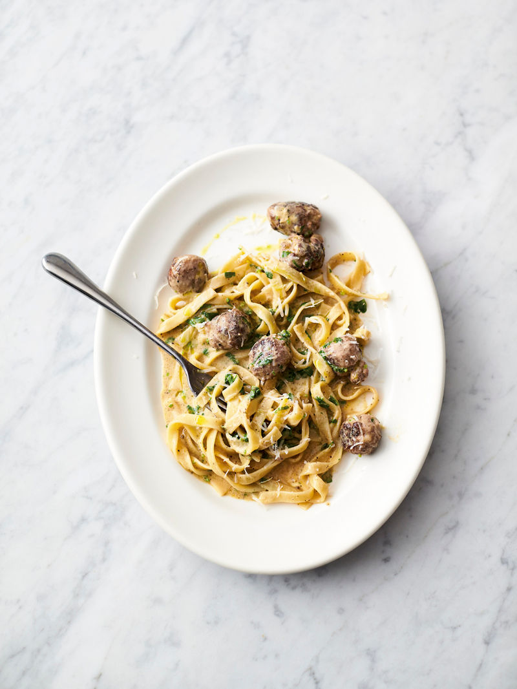

Sausage Carbonara

Easy sausage carbonara - FRESH PARSLEY & PARMESAN CHEESE
1 packdried tagliatelle1 lbitalian mild sausages½ (15g)a bunch of fresh flat-leaf parsley3large eggs60 g (2 oz)Parmesan and Pecorino Romano cheese- salt and pepper to taste
Cook the pasta in a pan of boiling salted water according to the packet instructions, then drain, reserving a mugful of cooking water.
Meanwhile, squeeze the sausagemeat out of the skins, then, with wet hands, quickly shape into even-sized balls.
Roll and coat them in black pepper, then cook in a non- stick frying pan on a medium heat with olive oil until golden and cooked through, tossing regularly, then turn the heat off.
Finely chop the parsley, stalks and all, beat it with the egg and a splash of pasta cooking water, then finely grate and mix in most of the cheese.
Toss the drained pasta into the sausage pan, pour in the egg mixture, and toss for 1 minute off the heat (the egg will gently cook in the residual heat).
Loosen with a good splash of reserved cooking water, season to perfection with sea salt and pepper, and finely grate over the remaining Parmesan and Pecorino Romano cheese.